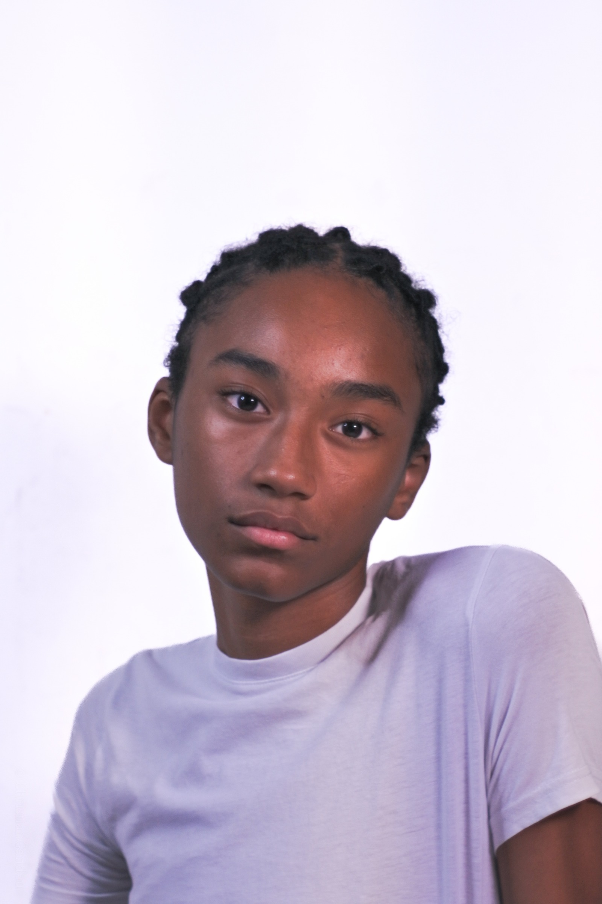
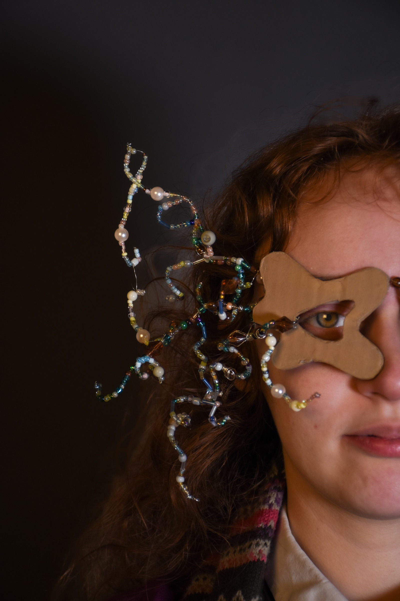
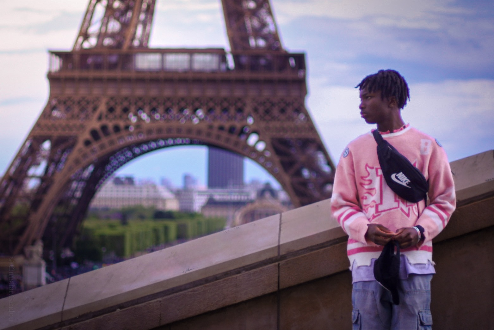
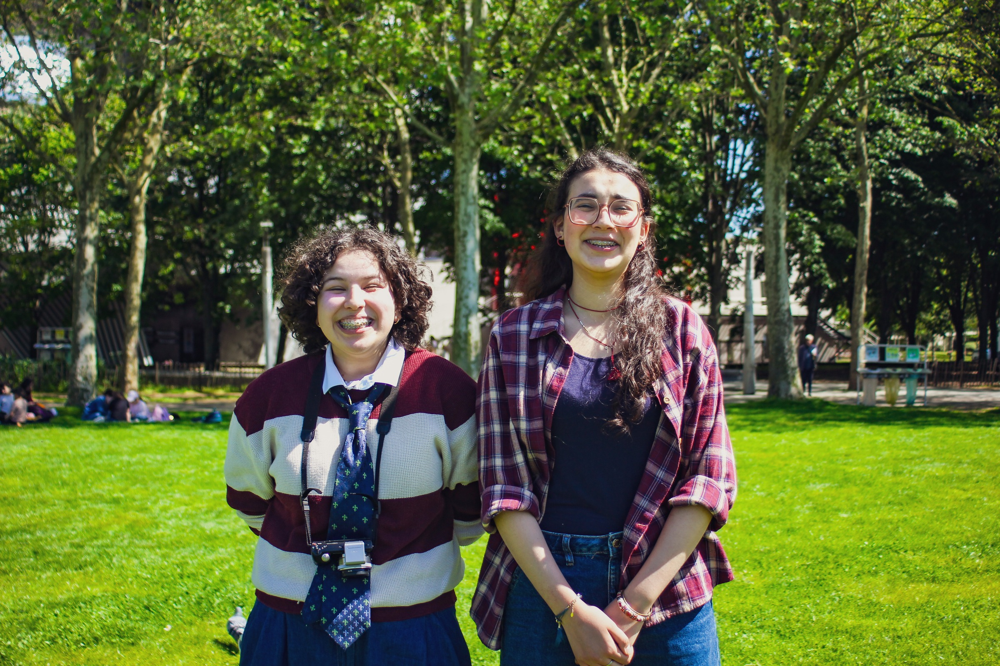
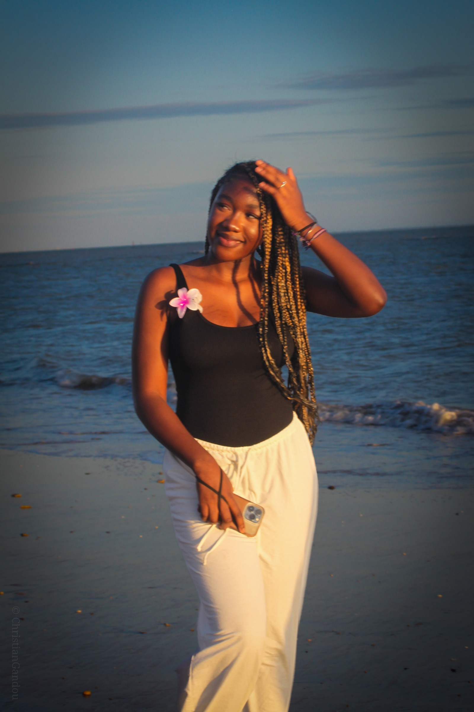
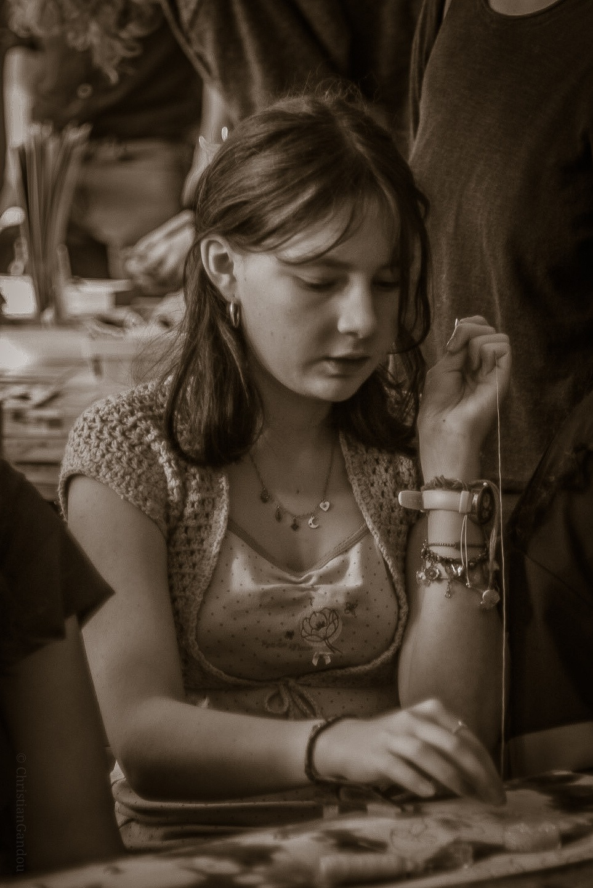
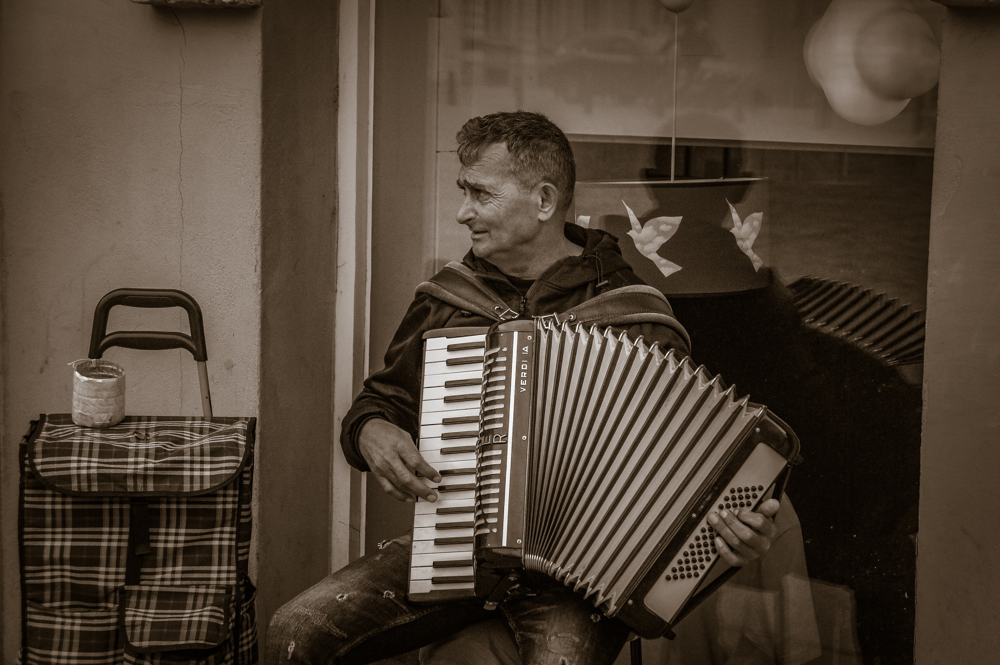

Isoler des détails ou bien capturer dans toute sa grandeur, l’architecture est partout un sujet de photo rempli d’histoire et de culture.
J’aime en capturer pour toujours garder une trace des pays où j’ai mit les pieds.
Retranscrire le sentiment de l’amour dans une image est un défi mais aussi un plaisir.
Couple Lifestyle
Préparation de l’itinéraire de la journée (différents spots) et direction des sujets
Studio - Polaroïd
Polaroïd de mannequinat
Série de clichés bruts et sans retouche destinés aux castings en agence.

Studio - Packshot
Packshot/Shooting produit

Documentation studio d'un projet de design.
Utilisation d'un éclairage directionnel sur fond noir pour accentuer le relief du volume et sublimer les textures des matériaux.
Portrait



Photos axés sur le spontané :
Sujet non dirigé ou légèrement
Photos prises dans l’élan
Recherche d’un aspect naturel
Emplacement de la vidéo — source à intégrer ici.

J’apprécie l’utiliser dans mes portrait monochromes lorsque je veux représenter un instant chaleureux.
Le sépia, originellement issu d’un pigment tiré de la seiche pour conserver les tirages, est un monochrome qui contrairement au noir&blanc apporte de la chaleur dans l’image.

Envie d’un shooting ? Retrouvez mes séries sur Instagram ↗